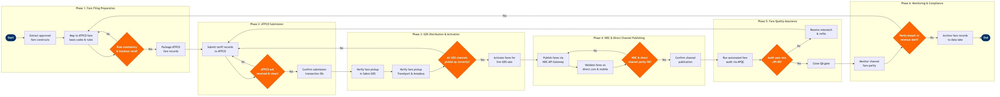

| Step | L4 Step Name | KPI / Target | Pain Point / Risk | Gate |
|---|---|---|---|---|
| 1.1 | Extract approved fare constructs from RM system | Fare extraction accuracy ≥99.5%; extraction completed ≥48 hrs before effective date | NRM fare constructs occasionally contain rule exceptions (e.g. negotiated corporate overrides) not natively expressible in ATPCO Category 15 — requires manual tariff analyst workaround adding 2–4 hrs | |
| 1.2 | Map fares to ATPCO fare basis codes & rule categories | Fare basis code mapping accuracy ≥99%; Category rule coverage ≥95% automated | ATPCO Category 25 (penalty) and Category 15 (sales restriction) rules require manual authoring — automation covers only ~70% of rule types, increasing tariff analyst workload during peak fare events | |
| 1.3 | Validate rule consistency, combinability & blackout dates | Pre-submission validation error rate <2%; all errors resolved before ATPCO filing cutoff | Blackout date conflicts with advance purchase minimum rules cause ATPCO pre-validation rejection — affects ~5% of seasonal filings and forces same-day reruns against tight submission deadlines | ⚠ |
| 2.1 | Submit fare tariff records to ATPCO before cutoff | Submission success rate ≥99%; filed ≥24 hrs before effective date; zero late filings during peak sale events | ATPCO submission cutoff (typically 0001Z day prior to effective date) is frequently missed during peak pricing events (holiday flash sales, competitor matching) — missed cutoff delays fare availability by 24 hrs, ceding revenue to competitors | |
| 2.2 | Monitor ATPCO acknowledgment and error correction queue | ATPCO acknowledgment received within 2 hrs of submission; error correction resubmitted within 1 hr of error receipt | ATPCO batch processing delays during high-volume industry filing periods (US public holidays, IATA fare sales coordination windows) push acknowledgment beyond 4 hrs — creates uncertainty on whether fares will be live for next-day sale open | ⚠ |
| 3.1 | Verify fare pickup and display in Sabre GDS | Sabre fare pickup within 4 hrs of ATPCO effective time; display accuracy ≥99.9% | Sabre GDS fare filing propagation latency can exceed 6 hrs during high-volume pricing events — creates booking windows where incorrect legacy fares are sold, triggering ADM disputes and customer compensation claims | ⚠ |
| 3.2 | Verify fare pickup in Travelport GDS channels | Travelport fare pickup within 4 hrs of ATPCO effective time; consistent display across Apollo and Galileo ≥99% | Travelport Apollo/Galileo dual-GDS architecture creates inconsistent fare display between subscriber segments — TMC agents on Apollo may see different fares than Galileo agencies for the same O&D pair during propagation window | |
| 3.3 | Verify fare pickup in Amadeus GDS | Amadeus fare pickup within 4 hrs of ATPCO effective time; zero stale-cache bookings at effective date boundary | Amadeus GDS fare cache refresh intervals can suppress newly filed fares for up to 30 min post-effective time — during midnight effective-date rollovers this window produces bookings at wrong fare levels that require involuntary refunds | |
| 3.4 | Activate fares for live sale across all GDS channels | Channel parity — all GDS channels display identical fares within 30 min of activation; activation completion ≥99.8% | Altéa PSS inventory sync with GDS availability responses can lag up to 15 min — agents see a quoted fare but receive a no-availability response at booking, increasing call centre contacts and reducing conversion rate | ⚠ |
| 4.1 | Publish approved fares via NDC API Gateway | NDC offer response latency <500ms at p99; NDC fare coverage parity with GDS ≥98%; NDC go-live within 2 hrs of GDS activation | IATA NDC 21.3 schema does not natively support all ATPCO rule category expressions — Category 15 sales restrictions require custom mapping that adds 4–6 hrs of integration work per fare family change and creates divergence risk between ATPCO-filed rules and NDC offer terms | ⚠ |
| 4.2 | Validate fare display on direct.com and mobile app | Direct channel fare accuracy ≥99.9%; page load including fare display <2 seconds; zero ghost-fare bookings post-filing | Direct channel pricing engine caches fare offers aggressively — cache invalidation lag of 5–10 min causes brief display of superseded fares immediately after a filing goes live, resulting in customer confusion and potential obligation to honour incorrect prices | |
| 5.1 | Run automated fare audit against ATPCO live filing | Fare audit pass rate ≥99.8% of sampled O&D pairs; P1 mismatch detection within 30 min of effective time | APQC automated audit covers only ~85% of fare rule combinations — complex combinability rules (ATPCO Category 10) and through-fare constructs require manual sampling, leaving a 15% blind spot that has historically surfaced as customer complaints rather than internal detection | ⚠ |
| 5.2 | Resolve fare display or combinability errors and refile | P1 fare display error resolution within 4 hrs; P2 within 24 hrs; zero repeat errors from same root cause within 30 days | Combinability errors between published fares and add-on/through fares (ATPCO Cat 10) are notoriously difficult to diagnose without GDS vendor support — escalation tickets to Sabre or Amadeus typically add 24–48 hrs to resolution, during which incorrect fares may continue to be sold | |
| 6.1 | Monitor real-time fare parity across distribution channels | Best Available Rate (BAR) parity compliance ≥97% across all monitored channels; parity breach alert-to-resolution SLA <2 hrs for P1 breaches | OTA and metasearch caching of superseded fares causes parity breaches that are invisible to airline distribution systems — detected only through mystery shopping, customer complaints, or third-party parity monitoring tools, with resolution dependent on OTA cache TTL (typically 4–24 hrs) | |
| 6.2 | Archive fare filing records to data lake for compliance | Audit trail completeness 100% per filing cycle; archive job SLA <1 hr post-activation; retrieval latency <15 min for DOT audit requests | Fare filing history is fragmented across ATPCO archives, GDS history logs, and internal NRM exports — DOT or IATA audit requests require manual aggregation from 3+ source systems, typically taking 2–3 business days and exposing the airline to compliance risk if records are incomplete |